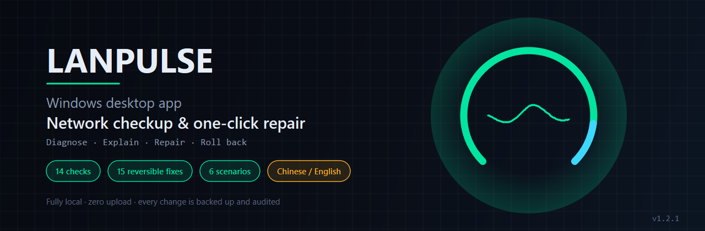
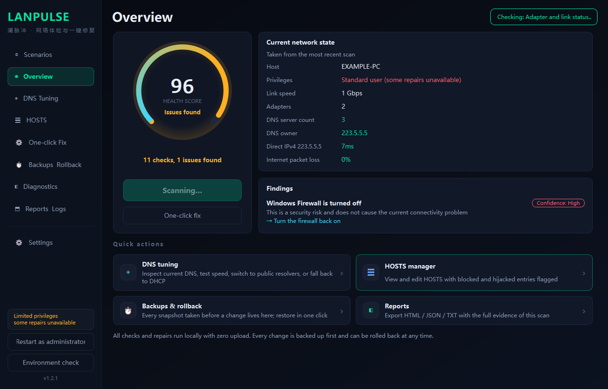
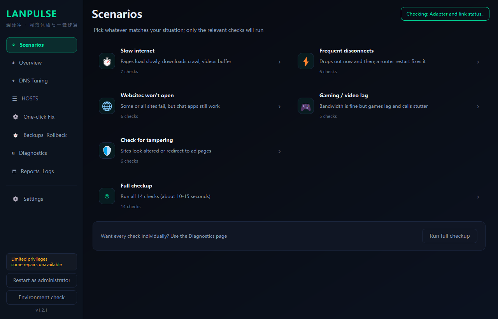
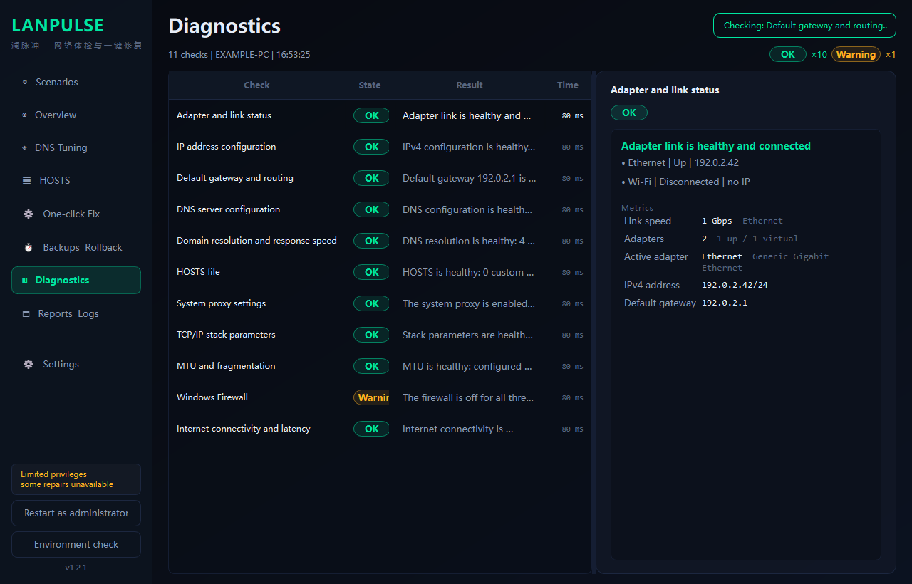
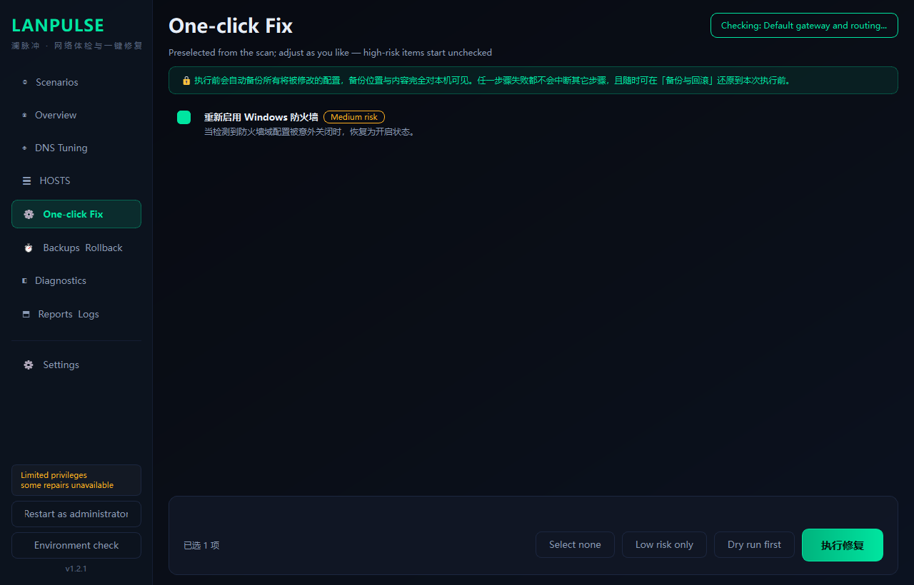
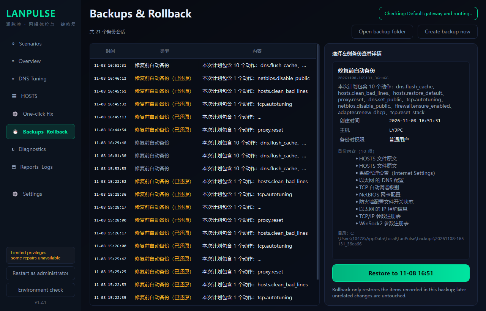
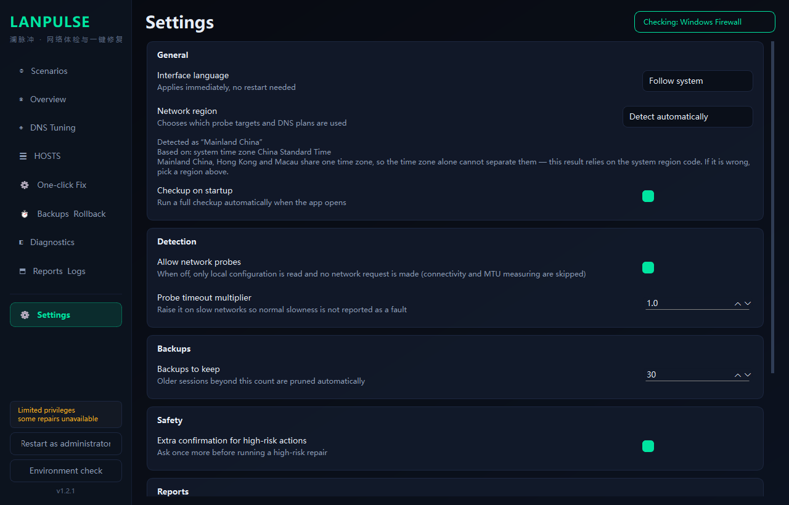

Back up first
Every write is preceded by a mandatory backup. If any backup fails, the whole round is aborted and nothing is changed — you never end up half-modified with no way back.

Not another "one-click fix" black box. LanPulse runs all 14 checks first, turns them into a verdict backed by an evidence chain, and only then lets you decide whether to repair — every change is backed up first and can be rolled back.
Current version v1.2.2 · MIT licensed · View source
Not marketing copy — this is how it is implemented
Every write is preceded by a mandatory backup. If any backup fails, the whole round is aborted and nothing is changed — you never end up half-modified with no way back.
Backups are plain text and .reg files, so
you can restore by hand even if the app itself breaks.
Rollback does not depend on the program still running.
No telemetry, no accounts, no cloud. All probes originate locally and stay local. No network data is collected or transmitted.
Each one runs and reports independently — not a vague "network is fine"
The test is: if this verdict were wrong, would the user make a bad decision? If yes, report SKIP and explain, rather than emit a confident-sounding false answer.
Screenshots use synthetic data (EXAMPLE-PC / 192.0.2.42) and contain nothing from any real machine






The classic failure mode of network tools is measuring the whole world with
a local ruler. Using 223.5.5.5 as a baseline in Frankfurt will
report a perfectly healthy connection as broken.
| Region | Local DNS preset |
|---|---|
| Mainland China | Alibaba + Tencent |
| Hong Kong | Hong Kong local |
| Macau | Macau local (CTM / MTel) |
| Taiwan | HiNet |
| Japan | Japan local |
| South Korea | Korea local |
| Singapore / Southeast Asia | Singapore local |
| India / South Asia | India local |
| Australia / New Zealand | Australia local |
| North America | North America local |
| Europe | EU public DNS (GDPR) |
| Other regions | Global anycast (loosest thresholds, never false-alarms) |
Detection uses local signals only: measured latency → system time zone → system locale. No geo-IP database and no location API.
LanPulse-1.2.2-Setup.exeLanPulse-1.2.2-win64-portable.zipLanPulse.exe
This project does not carry a code-signing certificate, so Windows shows
"Unknown publisher". Choose "More info" → "Run anyway".
You can verify the file against SHA256SUMS.txt on the Release page.